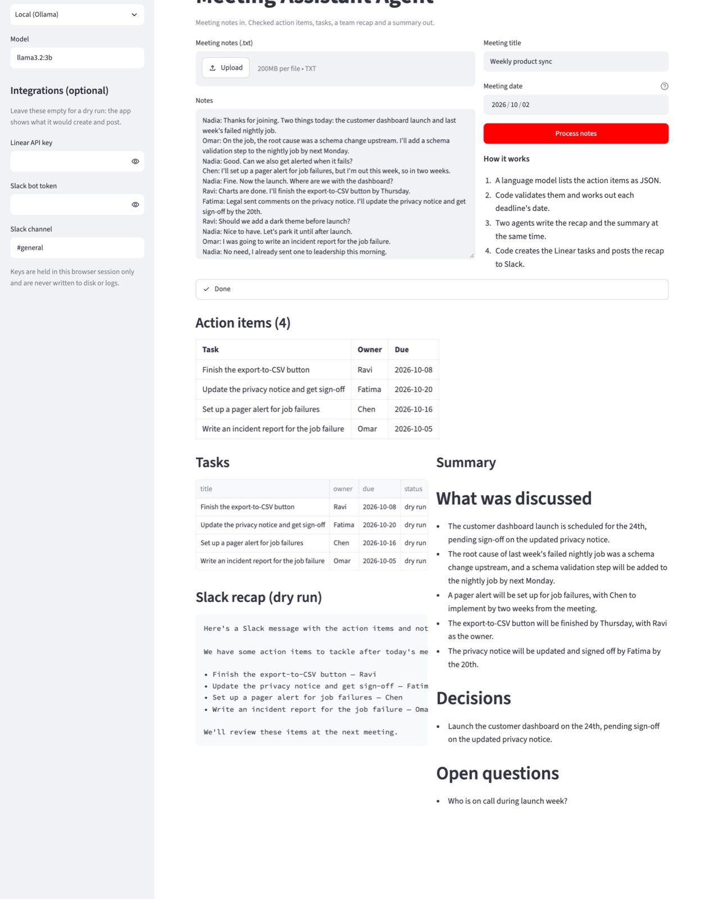
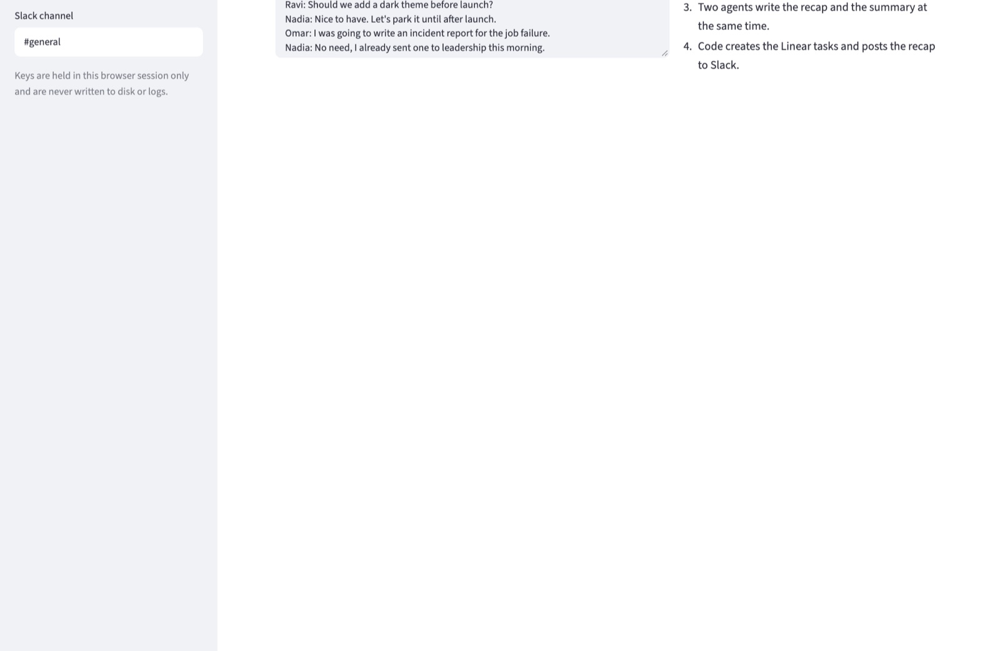

Overview
Follow-up work gets lost after meetings. This pipeline reads the notes, lists the action items as validated data, creates one Linear task per item, posts a recap to Slack and writes a summary.
The design rule: a language model is used only where judgement is needed. Dates, checking that an owner really appears in the notes, creating tasks and posting messages are done by code. An evaluation on 18 hand-labelled meetings (49 action items) with three open-source models shows what that buys.
Highlights
- Extractor returns JSON that is validated: empty tasks dropped, owners not in the notes removed, model-computed dates not trusted
- A deterministic deadline tool turns phrases such as "next Friday" or "the 20th" into dates
- Two Agno agents write the Slack recap and the summary in parallel, from the checked items
- Linear and Slack are called by code, with a dry-run mode when no keys are given
- Runs on local open-source models through Ollama, or any OpenAI-compatible API
How it works
- 01
Extract
A language model lists action items as JSON: task, owner and the deadline as it was said.
- 02
Validate and date
Code checks every item against the notes and resolves each deadline phrase to a calendar date.
- 03
Write
Two agents write the team recap and the summary at the same time.
- 04
Act
Code creates the Linear tasks and posts the recap to Slack, or shows a dry run.
Results


Tech stack
The app needs a language model to run, so this page shows how it works and what was measured; clone the repository to try it locally with Ollama.